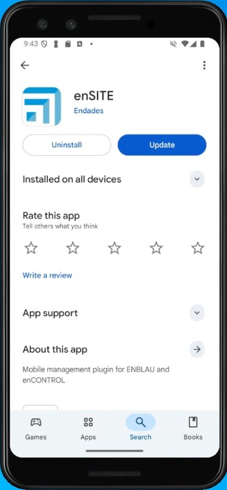
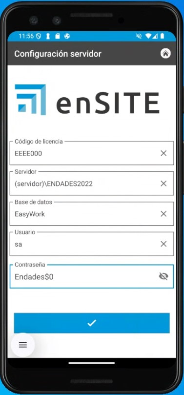
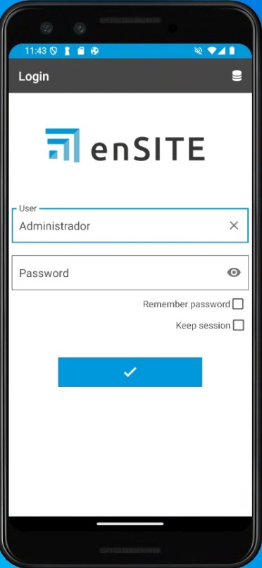
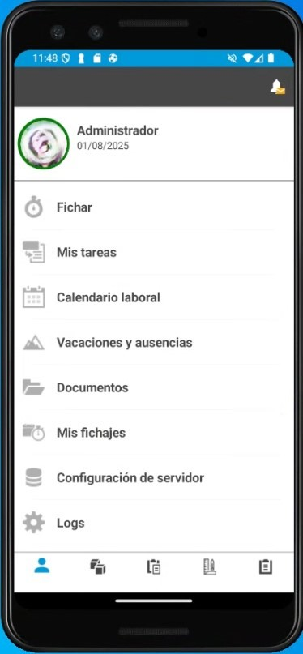

Requisitos de instalação do enSITE
1. Requisitos para a configuração do App enSITE
Antes de prosseguir com a instalação e configuração do enSITE, algumas configurações preliminares são necessárias.
1.1. Antivírus e Firewall
Siga as recomendações na seção 2. Configurações de antivírus e firewall em Configuração do Sistema.
2. Instalação do enSITE
-
A partir de um tablet ou dispositivo móvel com conexão Wi-Fi, acesse a Play Store / Apple Store, pesquise e baixe o app enSITE.

-
Abra o enSITE e insira as seguintes informações:
-
Código de licença (fornecido pela Endades)
-
Servidor e instância (o mesmo onde o ENBLAU está instalado no servidor)
-
Banco de dados (o mesmo onde o ENBLAU está instalado no servidor)
-
Usuário - sa
-
Senha - Endades$0

-
-
Login usuário e senha (o mesmo utilizado no ENBLAU)


Nota: Para mais informações, veja Possíveis erros
⚠️ Importante: É obrigatório utilizar no mínimo o SQL Server 2022 para garantir compatibilidade com futuras versões do ENBLAU e enSITE.
 Español
Español
 English
English
 Italiano
Italiano
 Português
Português